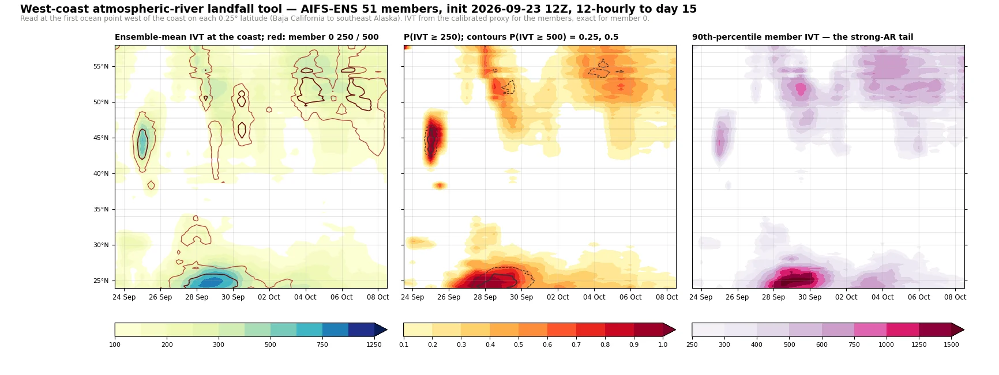
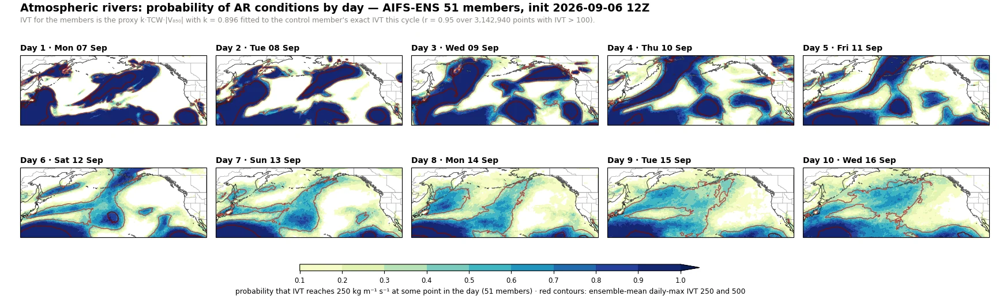
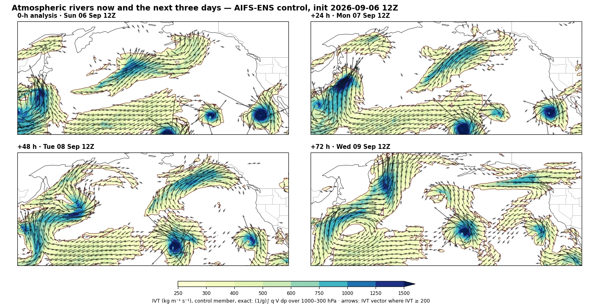

Twice daily · ECMWF AIFS-ENS · —
Atmospheric River Monitor
Integrated vapour transport from the 51-member ECMWF AIFS ensemble, read the way forecasters read atmospheric rivers: the probability that IVT reaches the 250 kg m−1 s−1 threshold on each day, a landfall tool along the West Coast from Baja California to southeast Alaska, exact control-member IVT for the next three days, and the chance of each Ralph-scale category at named coastal locations. Every member is carried to day 15 at 12-hour steps, so AR duration, not only intensity, enters the scale.
Where the rivers will make landfall, and how strong
Coast latitude against forecast time. Left: the ensemble-mean IVT at the first ocean point west of the coast, with the control member’s 250 and 500 contours in red. Middle: the fraction of members at or above 250, the AR threshold, with the fraction above 500 contoured. Right: the 90th-percentile member, the strong-AR tail the mean hides. Named locations are marked along the left axis.

AR-scale probabilities at named locations
For each member, the strongest spell with IVT at or above 250 at the location sets a category on the Ralph et al. (2019) scale: a preliminary rank from the peak IVT (250, 500, 750, 1000, 1250 for AR1–AR5), lowered one step if the spell is shorter than 24 hours and raised one if it lasts 48 hours or more. The table gives the fraction of members reaching each category within the 15 days, the most likely category, the median peak IVT, and the median onset time.
AR1 weak, primarily beneficial · AR2 moderate, mostly beneficial · AR3 strong, balance of beneficial and hazardous · AR4 extreme, mostly hazardous · AR5 exceptional, primarily hazardous. Duration is sampled at 12 hours here, so a one-step spell counts as under 24 hours.
Probability of AR conditions by day
The share of members whose IVT reaches 250 at some point during each forecast day, over the North Pacific and North America; the red contours are the ensemble-mean daily-maximum IVT at 250 and 500.

Now and the next three days: exact IVT, control member
The full integral (1/g)∫ q V dp over 1000–300 hPa for the control member at the analysis and at 24, 48 and 72 hours, with the IVT vector. This is also the field the ensemble proxy is calibrated against each cycle.

Method and honesty box
Exact IVT for every member would need humidity and wind through the column for 51 members at 31 steps, about 12 GB per cycle. The ensemble therefore uses a proxy, IVT ≈ k · TCW · |V850|, with total column water from the open data and the 850 hPa wind; k is refitted every cycle against the control member’s exact IVT through the origin over points with IVT above 100, and the fit is reported here and on the maps. The control member itself is always exact. Thresholds are absolute (250, 500, 750, 1000, 1250), following the Ralph et al. (2019) scale rather than percentile-based detection, so no climatology enters the categories.